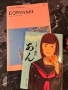
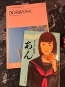
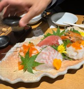
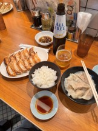
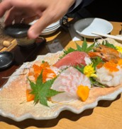
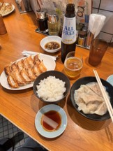

Primer encuentro con Japón

Viajar a Japón puede ser un sueño, pero también un desafío para quienes no se animan a hacerlo solos. Mi propuesta está pensada para acompañar a personas que desean vivir esta experiencia única con seguridad, organización y un profundo sentido cultural.
¿Por qué viajar conmigo?
Soy Licenciado en Administración, con más de 30 años de trayectoria en corporaciones, lo que me ha formado como organizador, planificador y comunicador experto.
He recorrido numerosos países y he viajado varias veces a Japón, permaneciendo allí durante semanas y recorriendo muchos pueblos y ciudades. Esa experiencia me permitió conocer su cultura, su dinámica cotidiana y sus particularidades logísticas. Hablo inglés y tengo conocimientos de literatura japonesa, lo que me permite enriquecer el viaje con una perspectiva cultural y espiritual.
Un viaje distinto
Evitaremos buses turísticos: usaremos el transporte urbano, como lo hace el japonés de a pie. No habrá largas explicaciones de monumentos imposibles de recordar: cada lugar será una vivencia, un recuerdo auténtico. El grupo será pequeño y cercano, compartiendo intereses y disfrutando a nuestro ritmo. La propuesta es vivir Japón, sentirnos parte de su vida cotidiana, aunque sea por unos días.
Mi compromiso
Te propongo una vivencia única, un paseo por los sentidos, con la tranquilidad de que estaré acompañándote en cada paso para que puedas disfrutar sin estrés. Soy Christian Criscuolo y quisiera acompañarte en tu viaje.
 


 


